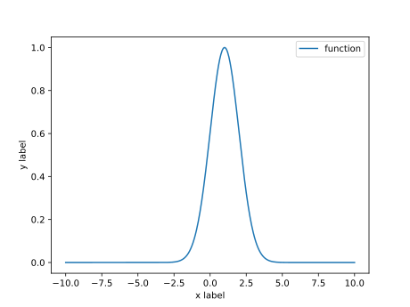
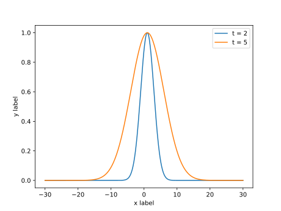

局部加权回归
发布: 2021-10-30
上次更新: 2021-11-04
简单介绍局部加权回归算法的思想
¶ 基本思想
文章 欠拟合与过拟合 简单介绍了欠拟合与过拟合的相关概念， 其中我们可以发现，如果选择的模型的阶比较低，就可能出现欠拟合的情况， 但如果过高，则又会出现过拟合的情况
因此，局部加权回归的思想就是，只关注 在预测点附近 的样本点， 忽略或者减小离预测点较远的样本的影响
如果把样本局限在预测点的附近，就可以将这些样本点 近似 看做是线性的 （这有点像微分，或者是切线的概念）， 这样就可以使用线性模型进行拟合，而无需考虑模型的阶
¶ 数学原理
¶ 引入权值
在这个算法中，我们将 假设函数 (hypotheses) 设为 $ \sum_{i=1}^{m} w^{i} ( y^{i} - \theta^{T} x^{i} )^{2} $
其中， $w^{i}$ 为权值[1]且有[2] $$ w^{i} = \exp{(- \frac {1} {2} ( x^{(i)} - x )^{2} )} $$
这里将 $e^{x}$ 记作 $\exp{(x)}$ ， $e$ 为 自然常数
注： $x$ 指需要进行预测的位置，可看作是 $x$ 轴上的一个坐标点
并且可知
若 $\mid x^{(i)} - x \mid $ 越小，则有 $ w^{i} \approx 1 $
若 $\mid x^{(i)} - x \mid $ 越大，则有 $ w^{i} \approx 0 $
$w^{i}$ 是一个钟形曲线，下图所示的为 $ e^{- \frac{1}{2} (x - 1)^{2}} $

在这个例子中，离 $x = 1$ 越近，它的权值越大，越远则权值越小， 于是，离 $x = 1$ 近的点得到重视，而离 $x$ 较远的点的影响被降低
¶ 一般化
将权值函数写成更一般的方式： $$ w^{i} = \exp{(- \frac {( x^{(i)} - x )^{2}} {2 \tau^{2}})} $$
其中 $\tau$ 被称为波长函数，它能够控制权值随距离下降的速度
下图是一个例子：

注：上图中的 $t$ 代表 $\tau$
¶ 需要注意的问题
首先，需要明确指出，局部加权回归 不能完全避免 欠拟合与过拟合的问题， 原因在于，算法实际上还是在使用线性回归，如果权值随距离下降的速度很慢， 即 $\tau$ 很大，算法实际上仍受到大部分数据的影响， 但总体上看来，它仍比普通的线性回归更能避免欠拟合与过拟合的问题
其次，算法实际上 并没有 建立一个永久模型
换句话说，每一次预测，算法都需要重新遍历训练集，
然后才进行 加权 计算，最后给出预测
这与普通的线性回归不同，在线性回归中，我们得出了 $\theta$ ，
实际上就得出了一个能用来预测的模型，无须在每次预测时又重新进行训练